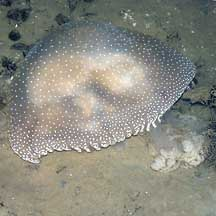
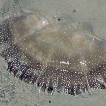
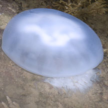
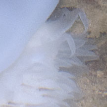
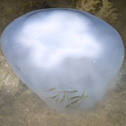
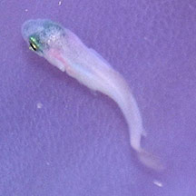
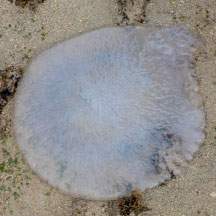
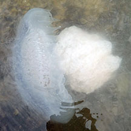
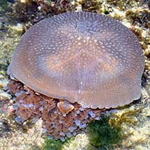

|
|
| jellyfish text index | photo index |
| Phylum Cnidaria > various classes | jellyfish |
| Huge
jellyfish Order Rhizostomeae Class Scyphozoa updated Jan 2020 Where seen? Enormous jellyfishes are sometimes seen washed ashore on our shores. Several may be seen, and then none seen again for some time. These are probably different species but are grouped here for convenience of display. Features: Bell about 25-50cm diameter, oral arms about the same length as bell diameter (they seldom extend much beyond the bell). Some have finger-like bumps on the bell. Jelly friends: Small fish have been seen sheltering among their arms. |
 Changi, Aug 02 |
 Changi, May 06 |
 Chek Jawa, Oct 07 |
 Small fishes swimming near the jellyfish. |

*Species are difficult to positively identify without close examination.
On this website, the animals are grouped by external features for convenience of display.
| Huge jellyfishes on Singapore shores |
On wildsingapore
flickr
|
| Other sightings on Singapore shores |
 Sentosa Serapong, May 12 |
 |
 Small fishes swimming near the jellyfish. |
 Small fish swimming near the jellyfish. |
 Washed up on the shore. Terumbu Bemban, Aug 25 Photo shared by Jayden Kang on facebook. |
 Another one swiming in the water. Terumbu Bemban, Aug 25 Photo shared by Isaac Ong on facebook. |
 Pulau Salu, Apr 21 |
| Acknowlegement With grateful thanks to Dr Michael N Dawson of the University of California, Merced for identification of this jellyfish. Links
|